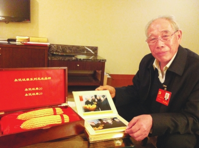

育种专家的十八大“礼物”

图为程相文代表展示他带来的礼物—两穗玉米品种。
农民日报记者 李海涛 文/图
11月7日，记者在代表团驻地见到了十八大代表、河南鹤壁市农科院院长程相文。这位年逾古稀、痴心育种半个世纪的我国着名玉米育种专家，向记者展示了他带到十八大、打算送给温家宝总理的“礼物”——两穗玉米。
这两穗玉米被包裹在精致的木质盒子里，籽粒非常饱满，一穗上面贴着“永优浚单20”的标签，一穗贴着“永优浚单29”的标签，是程相文带领农业科研人员精心培育的众多优良品种中的“代表作”。
程相文告诉记者，“永优”是去年温家宝总理视察鹤壁市农科院时，亲自为“浚单”玉米品种手书题名的，勉励大家培育出的种子品质永远优秀，在与外国种子的竞争中永远保持优势。今年10月份，该品牌已顺利通过国家商标局核准注册。
程相文说：“‘浚单20'目前已成为黄淮海地区种植面积最大、全国种植面积增长最快的玉米品种。今年2月，‘浚单20'选育及配套技术研究与应用项目还获得了国家科学技术进步一等奖。而‘浚单29'去年10月份通过国家审定，今年就获得大丰收，经专家实打验收，百亩高产攻关田平均亩产961.9公斤，万亩示范区平均亩产872.3公斤，10万亩高产创建示范方平均亩产766.6公斤，创全国夏玉米同面积高产纪录！”
提到当选为十八大代表的心情时，程相文感慨万千：“作为基层农业科研人员，能够当选全国党代表，足见党和国家对‘三农'和农业工作者的重视，万分激动的同时也深感责任重大。我想得最多的就是怎样当好党代表，把基层干部群众和农业科技人员的愿望和心声带到会上，把十八大的精神准确及时地传达到基层。”
谈起自己的愿望时，和土地打了一辈子交道的程相文表示，虽然我国粮食在各方面的努力下取得了可喜的“九连增”，但现在农业基础依然薄弱，粮食生产丝毫不能放松，希望国家进一步加大对农业的投入，尤其是农业科技方面的投入，同时重视农业科技人才的培养，提高农民的整体素质和管理水平，为粮食稳定增产提供技术和人才支撑。
“种子没有一劳永逸的，必须不断推出新品种，才能保证高产。我一定要带领好科研团队，选育出更优良的品种，做强做大‘永优'品牌，为振兴民族种业，保障国家粮食生产安全，作出积极的贡献。”程相文最后说。
(文章来源：农民日报)